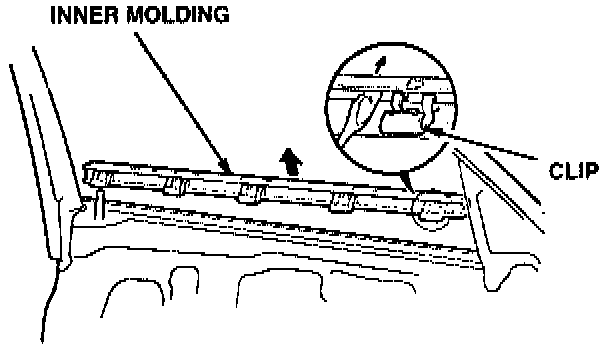
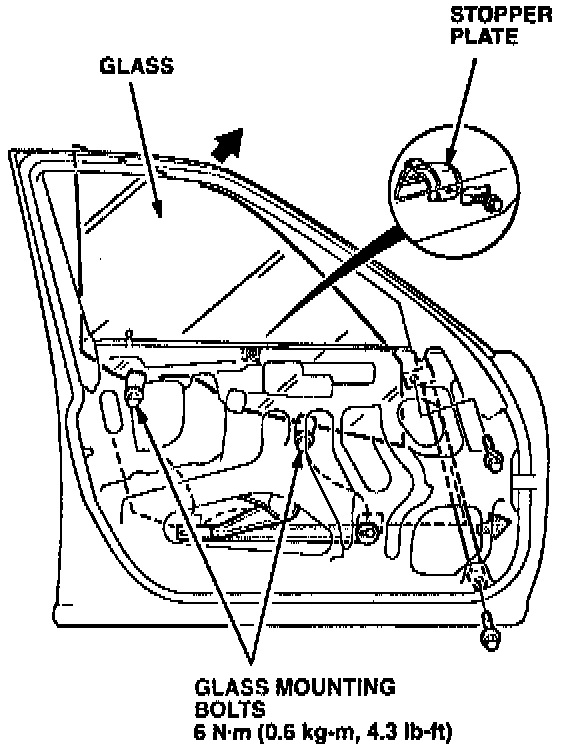
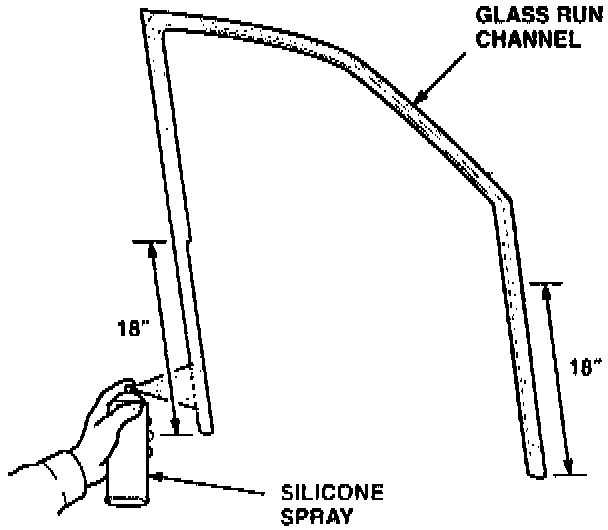

Glass Run Channel Replacement
Glass Run Channel ReplacementInspect the glass run channel for distortion or damage. While test driving the car, use a stethoscope to listen for air leaks. Replace the run channel if it is damaged, or if it leaks air and the glass is adjusted properly.
1. Remove the door panel. Use a razor blade to cut the adhesive for the plastic cover. Remove the plastic cover.
Inner Door Molding:

2. Remove the inner molding.
Door Glass Mounting:

3. Remove the stopper plate. Loosen the glass mounting bolts, slide the guide toward the rear, and remove the glass.
4. Remove the glass run channel.
Channel Assembly:

5. Lubricate the lower eighteen inches of the new glass run channel, outside edges only, with a silicone spray. Slide the glass run channel into the front and rear channels until it is properly positioned.
6. Install the run channel in the upper part of the door frame. Make sure it is seated properly along its full length, especially in the area of the mirror.
7. Reinstall the glass. Adjust the glass roller guide as shown in step 7 of floor Glass Alignment Inspection and Adjustment.
8. Reinstall the stopper plate, inner molding, plastic cover, and door panel.
9. Test drive the car. If the wind noise still seems excessive, compare it to a similar vehicle. If this comparison shows that the wind noise is excessive, replace the glass run channel again.